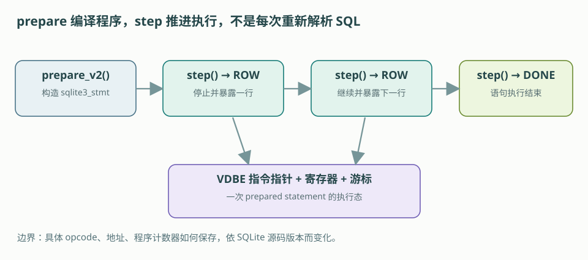
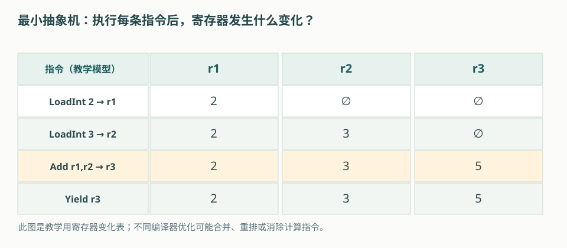
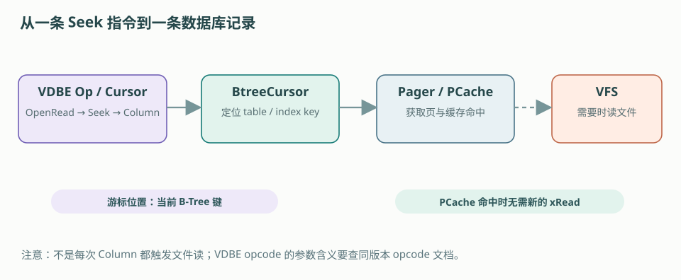

VDBE 虚拟机：从一条指令到一行结果
SQLite 的执行器怎样在准备好的指令、寄存器和 B-Tree 游标之间推进？用一个真正的 prepared statement 观察 ROW、DONE 与重置执行的边界。
1. prepare 完成之后，为什么还没看到结果？
当应用调用 sqlite3_prepare_v2()，SQLite 已经将 SQL 编译成预备语句，可能完成名称解析、优化和 VDBE 指令生成；但普通的 SELECT 还没有遍历结果。只有调用 sqlite3_step()，语句才向前运行到能输出一行、正常结束，或者遇到异常。

VDBE 是一个寄存器式字节码执行器。一个指令包含 opcode 与 P1–P5 五个操作数；P1/P2/P3 常用于游标、寄存器或跳转目标，但各指令的含义不同。读取 EXPLAIN 必须同时理解 opcode 自己的文档。官方 VDBE 字节码资料明确声明：opcode 集合与输出不是 SQLite 对外兼容性接口。
2. 程序计数器、寄存器和指令解释循环
执行循环的主要源码入口在 src/vdbe.c 的 sqlite3VdbeExec()；初始化与 API 边界还涉及 vdbeaux.c、vdbeapi.c。为了减少误解，可以把一个运行时 VDBE 理解成四部分：已生成指令、下一条指令位置、寄存器和值的状态、游标及其它运行资源。

例如相加必须先得到两个操作数，再在某个目标寄存器保存结果，最后将一组结果寄存器作为行公开给 sqlite3_column_*。不过编译器可能提前折叠常量、复用寄存器、调整跳转，因此图示的四条动作不保证在实际指令表中一一出现。
如何读 EXPLAIN 的五个操作数
| 列 | 你应先问的问题 | 误区 |
|---|---|---|
addr | 这条指令在哪个位置？ | 跨版本把地址当稳定标识 |
opcode | 当前版本指令的定义是什么？ | 从名字猜出全部副作用 |
p1 / p2 / p3 | 它们在此 opcode 中是寄存器、游标还是跳转？ | 一概认为 P1=输入、P2=输出 |
p4 / p5 | 是否携带类型、比较/标志等补充信息？ | 认为 P4、P5 永远可以忽略 |
3. 为什么 VDBE Cursor 不等于文件描述符
一条 SELECT 可以通过 VDBE 游标在表或索引 B-Tree 中寻找记录，使用 OpenRead、Rewind、Seek*、Column、Next 等类别的指令。然而它们操纵的不是 C 的 FILE*：B-Tree 游标负责在逻辑键空间上定位，Pager 负责页面，PCache 管理缓存，必要时才通过 VFS 触发文件读取。

例如 SELECT name FROM t WHERE id=7 的查询计划可能利用 INTEGER PRIMARY KEY 的 rowid 直接查找；如果用普通 TEXT 条件，是否出现索引游标取决于索引和规划器选择。定位相关行为可以从 vdbe.c 的游标 opcode 跟到 btree.c 的游标接口，再深入 Pager。
4. 用同一条 SQL 对照计划、字节码和结果
下面的 examples/11_vdbe.sql 只操作内存数据库；EXPLAIN QUERY PLAN 给出高层访问策略，而 EXPLAIN 展示字节码。二者都不是保证输出固定字符串的公共 ABI。
CREATE TABLE t(id INTEGER PRIMARY KEY, name TEXT);
INSERT INTO t VALUES (1,'Ada'), (2,'Lin'), (3,'Grace');
EXPLAIN QUERY PLAN SELECT name FROM t WHERE id > 1 ORDER BY id;
EXPLAIN SELECT name FROM t WHERE id > 1 ORDER BY id;
SELECT name FROM t WHERE id > 1 ORDER BY id;最终两行值应依次为 Lin、Grace。查看自己的 EXPLAIN 输出时，可以先找游标的打开、键范围的定位、结果行产生、下一轮推进这四个职责。不要为了让文档“看起来确定”而填写虚构的 opcode 地址或时钟周期。
可检查的 C API 样例
sqlite3_stmt *s = NULL;
int rc = sqlite3_prepare_v2(db,
"SELECT name FROM t WHERE id > ?1 ORDER BY id", -1, &s, NULL);
if (rc == SQLITE_OK) {
sqlite3_bind_int(s, 1, 1);
while ((rc = sqlite3_step(s)) == SQLITE_ROW) {
/* 在此处读取 sqlite3_column_text(s, 0) */
}
if (rc != SQLITE_DONE) { /* 检查 rc 和连接错误 */ }
}
sqlite3_finalize(s);这段仅刻画 API 结构。完整的可编译、会检查结果的程序在 examples/11_vdbe_steps.c。它执行两次 step() 获得两行，再观察 DONE，调用 reset() 后再次运行，确认“重置后可重复执行”这一可观测语义。
5. reset、clear_bindings 和 finalize 管理三种不同资源
sqlite3_reset() 使预备语句可以重新开始运行，但不会清除已有绑定值；想移除绑定参数值需调用 sqlite3_clear_bindings()。sqlite3_finalize() 才是销毁句柄的操作。一次语句在正常 DONE 后或发生错误后应按 API 文档处理重置与资源释放，不能无限制重用旧的列指针。
sqlite3_column_text() 返回的数据指针受 SQLite 管理，step、reset、finalize 或某些类型转换调用都可能让它失效；需要持久化使用时应及时复制到应用自己的内存。| 动作 | 主要目的 |
|---|---|
sqlite3_step() | 推进执行，返回 ROW/DONE/错误 |
sqlite3_reset() | 重新准备执行同一个 statement |
sqlite3_clear_bindings() | 将绑定参数清为 NULL |
sqlite3_finalize() | 销毁预备语句、释放相关资源 |
6. 在源码与运行结果之间建立可复现证据
本章任务
- 运行
sqlite3 :memory: < examples/11_vdbe.sql，保存 SELECT 结果与 EXPLAIN； - 编译运行
examples/11_vdbe_steps.c，检查两次 ROW 后出现 DONE； - 找到
vdbe.c中一个实际出现在自己 EXPLAIN 输出中的 opcode，标记它使用的是哪种操作数； - 改变查询条件或新增索引，比较计划而不是只比较执行时间。
自测：执行两次 step 相当于执行两次 prepare 吗？
不相当于。普通 SELECT 中的第二次 step 会从语句当前执行状态继续推进；重复执行整条语句通常需要 reset，必要时更新绑定参数。
接下来把 VDBE 游标指向的键与记录展开到 SQLite 的真实 B-Tree 页面格式。
官方原始资料与版本边界
本章结构图使用独立原创教学抽象；具体 opcode、源代码调用路径、B-Tree 平衡策略或日志行为请绑定你检出的 SQLite 源版本。图示不替代 SQLite 文件格式或 C API 规范。
- The SQLite Bytecode Engine · SQLite 官方资料
- sqlite3_step() · SQLite 官方资料
- Prepare Statement · SQLite 官方资料
- Reset Statement · SQLite 官方资料